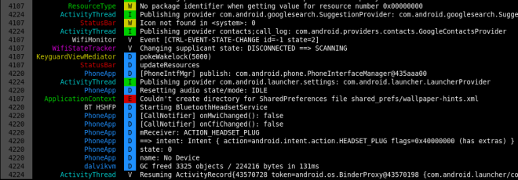
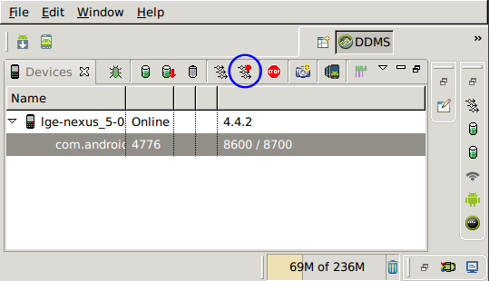
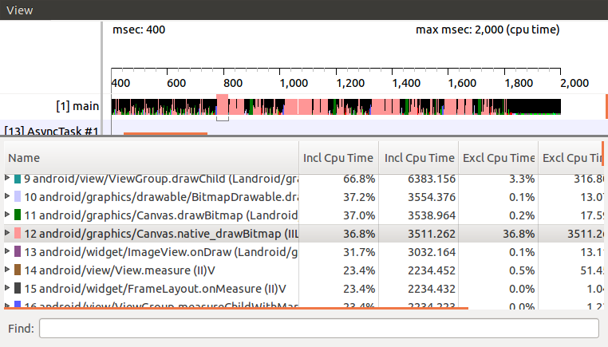
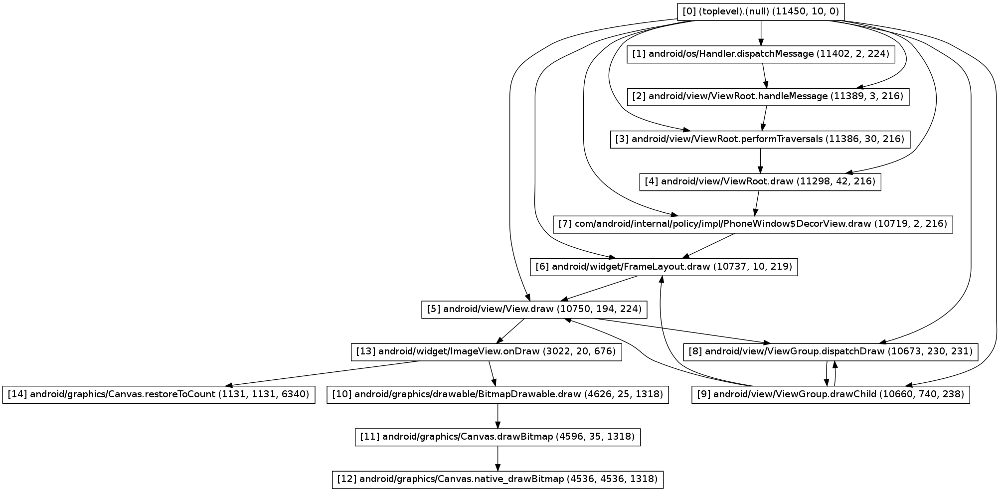

Android Java 層 Debug 工具介紹 (1)
今天又從硬碟裡翻出一份還在前公司時製作的內訓資料，是當時所有我會的 Android Java debug 工具的介紹，於是整理之後就成為了現在這篇文章。
本文中提及的工具與使用方法我都已測試過，即使在目前在最新的 Android 4.4 上也還能正常使用，但畢竟這些已經是一年前的資料了，或許已經有更新的工具能替代 使用，因此若是您知道其他更好用的工具，也希望您能不吝指出。:)
Log Viewer
老實說我從來就不覺得 ADT 附的 Log Viewer 好用，身為 command line
魔人，當然要選擇 command line 的作法。
Colored Logcat
雖然 adb 本身就有 logcat 指令，但既沒有對齊欄位，也沒有顏色識別，實在是
不容易從中識別出自己所關心的 log，好在早就有現成的 Colored Logcat。Colored
Logcat 是由 Jeff Sharkey 所開發的一個以 python 寫成，用來 parsing adb
logcat 的輸出，並加上顏色與對齊後輸出的工具。

由於原作者釋出 Colored Logcat 之後沒有持續維護，因此在 Github 及 Google Code
上都可以找到其他人的分支。我自己所使用的版本則是對其做了兩個修改：
- 增加 -v 參數使其可顯示每一筆 log 的時間
- 補上原實作漏了的 log 層級：FATAL
或許有人會問，這種工具怎麼看都還是比不上 ADT 內建的 Log Viewer 呀，究竟
command line 有何神奇魔力？這些工具單獨使用的話確實是不怎麼樣，但厲害的地方在於
它們可以很輕鬆的搭配其他 shell 指令而組合出更多彈性的功能，例如：
- 搭配 grep 以過濾關鍵字
- 將輸出 redirect (或 tee) 至檔案，方便後續處理
- 如果有使用 screen, tmux，還可以隨時暫停，並在畫面上搜尋關鍵字
Debug function
public static void debug(Object... arr) { StackTraceElement call = Thread.currentThread().getStackTrace()[3]; String className = call.getClassName(); className = className.substring(className.lastIndexOf('.') + 1); android.util.Log.v("_DEBUG_", call.getLineNumber() + ": " + className + "." + call.getMethodName() + " " + java.util.Arrays.deepToString(arr)); }
這個其實既不是 Log Viewer，也不能算是 debug tool，勉強只能算是個小技巧吧。
它的功用是在顯示的 log 前面加上 class name, method name 與行數，就像是 C 的
__FILE__, __LINE__ 與 __func__。
由於參數 arr 使用了 Java 5.0 開始才有的 Autoboxing 與
Varargs，因此無論是什麼參數、幾個參數都能接受，而輸出的部份又用了
deepToString，所以連陣列內容都能印出。
這個 method 其實不只能在 Android 上使用，一般的 Java
環境下也能運作，但需要將第二行中的常數 3 改為 2 才行。
Profiler
接下來這個 profiler 其實只是 ADT 內建的工具，官方也有一篇詳細
的教學，所以我就只以圖片與簡短描述帶過。
執行 profiler 共有兩種方式，第一種方式是在程式中安插程式碼：
第一種
// start tracing to "/sdcard/calc.trace" Debug.startMethodTracing("calc"); // 做 profiling 的區域 // stop tracing Debug.stopMethodTracing();
上述這個方法比較麻煩，但能確保 profiling 的對象只有自己關心的區域。
第二種

第二個方法則是直接在 Android Device Monitor 工具內，選好要 profiling 的 process，然後點上圖中被藍色圓圈圈起的按鈕，並在打算停止 profiling 時再按一下即可。

接著畫面上就會出現 profiling 的結果。
Call Graph
第一種方法執行完的 trace file 會存在 SD card 內，而第二種則是存在
/tmp/ddms....，可以從分頁名稱上得到確切的檔名。
有了 trace file，接著只要執行：
dmtracedump -g callgraph.png calc.trace
就可以得到如下的 call graph。

debuggable flag
第二種方法在使用上有個限制，即操作的手機必須是 Engineering build，或著所觀察的 App 具有 debuggable flag。
不過即使兩像條件都不具備也不用擔心，您還是可以用後續文章將會提到的 reverse
engineering tool: apktool，將原本的 apk 檔解開、加上 debuggable
flag、重新包裝回 apk 檔，然後就能開心的使用了。運用這種重新打包的手法，就算沒有
source code，也能將所需的 code 插入，因此正好可以拿來安插第一種 profiling
所需的 code，細節將會在後續的文章中說明。
篇幅好像差不多了，那麼就先在此打住吧。 接下來預計還會寫一至兩篇文章介紹 remote debugging 與 reverse engineering tool，希望我能早日完成。:)